The screen at a glance
The main screen is built around the viewfinder, with the controls you need while moving the camera under it.
- 1 · Header: the plan badge (LITE or PRO), a chip naming the camera rig when one is on, the wand that opens Setup and Learn, and the Settings gear.
- 2 · Status strip: Ready before you start, then the protocol, target address and rate while streaming, for example
Streaming · OSC · 192.168.0.94:4000 · ~30 Hz, andStreaming + recording · takewhile a take is running. On Lite it also shows the time left in the session. - 3 · Viewfinder: the view menu at its top right chooses what it shows (Off, 3D view, AR camera, or a return picture). Along its bottom edge: Scout / Fly, Fly home and Zero pose.
- 4 · Tabs: Pose (readout, Hold, Space scale), Lens, Effects, Rig, OSC and Scene.
- 5 · Bottom row: Start stream (it turns green and reads Stop stream while sending) and the round Record button, which becomes a stop square while a take is running.
On a tablet in landscape, the tools stack in one scroll area beside the viewfinder.
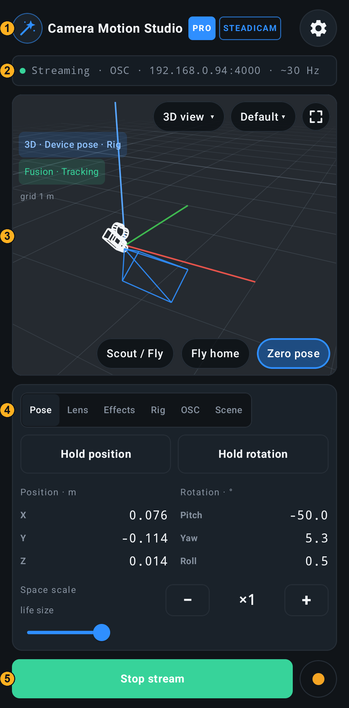
Setup wizard
The wand in the header opens the Setup page, with Run setup wizard, Open Learning, a link to the product web page and Exit. The wizard sets up the first connection in a few steps and shows a summary before it changes anything, so you can run it again whenever you change setup.
- Where are you streaming to? Unreal Engine, Roblox Studio, MotionBuilder, Blender, another FreeD / OSC receiver, or Not sure yet (skips networking). For a receiver with an address it asks for the IP and port.
- ARCore or IMU. ARCore tracks position as well as rotation; without it the phone's motion sensors give orientation only. With ARCore it also asks how to anchor the origin (see Tracking).
- Camera rig and Scout. Raw, or a camera rig (Pro), and whether the phone should fly the camera with Shove or the on-screen joystick.
- Lens. Whether to send field of view, and depth of field too.
The wizard sets the receiver's protocol and a Space scale of 1 (life size), and turns on the return-viewfinder previews that fit. On the first page, a language menu lets you switch the app's language before you read anything else.

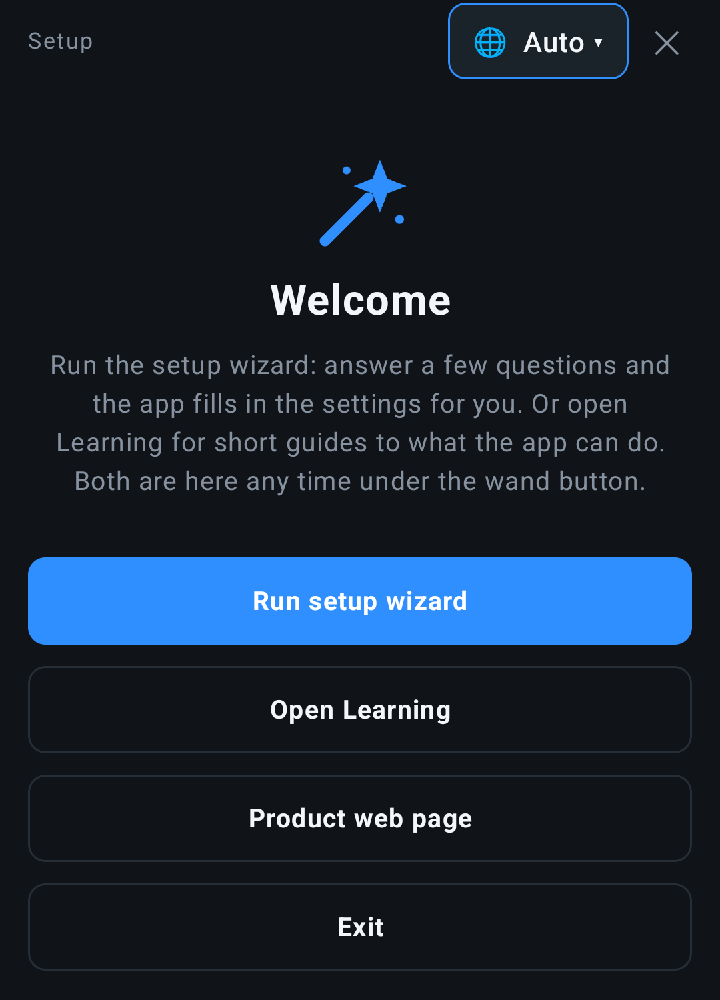
Learn, inside the app
Learn (Open Learning on the Setup page, or from Settings) holds short, step-by-step guides to what the app does. Topics teach one part of the app (Track the camera, Move like a camera, Camera rigs, Lens, Effects, Markers and the scene and more); recipes under Tools for your shoot start from a result, such as Do the move again, exactly, Lock the horizon or Smooth push-in, and give you the presses for it.
- Tailored to your setup. Steps change with your pose source, anchor mode and protocol, and each lesson says what it still needs.
- PRO badge. On Lite, a lesson about a Pro feature carries a PRO badge. You can still read it.
- Show me on the HUD. Walks the same steps on the real screen and points at each control.
- Language. The Learn pages have the same language menu as the wizard in their header.
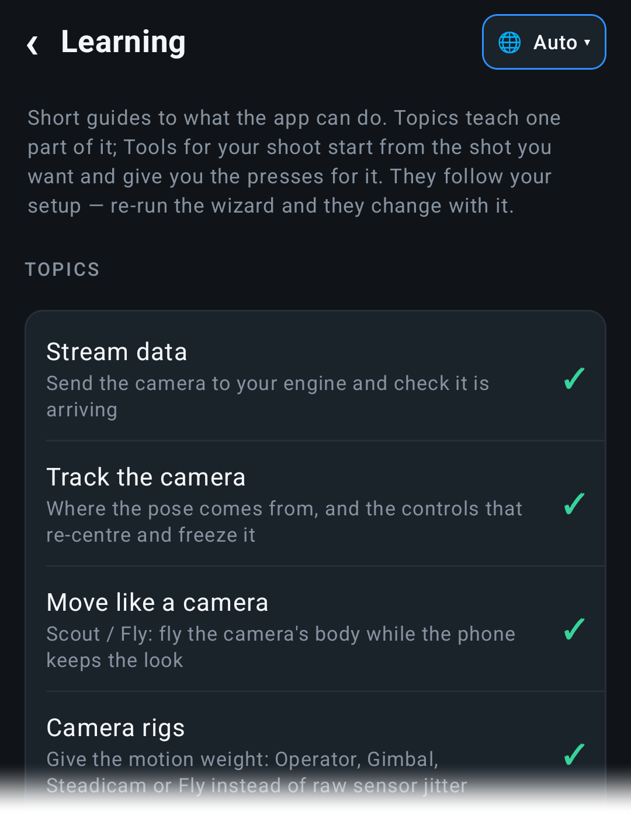
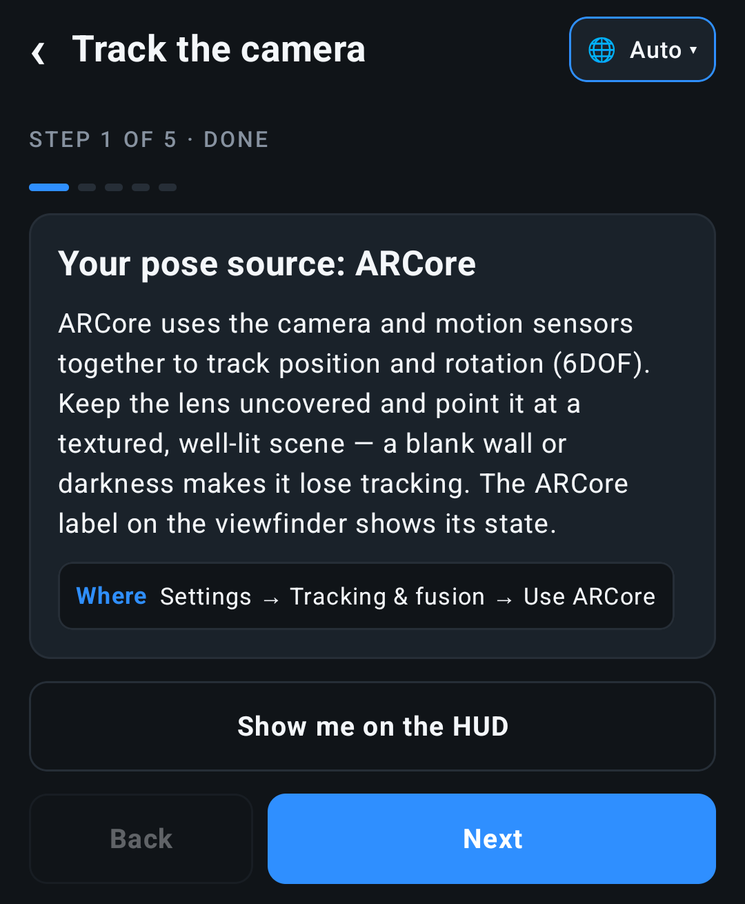
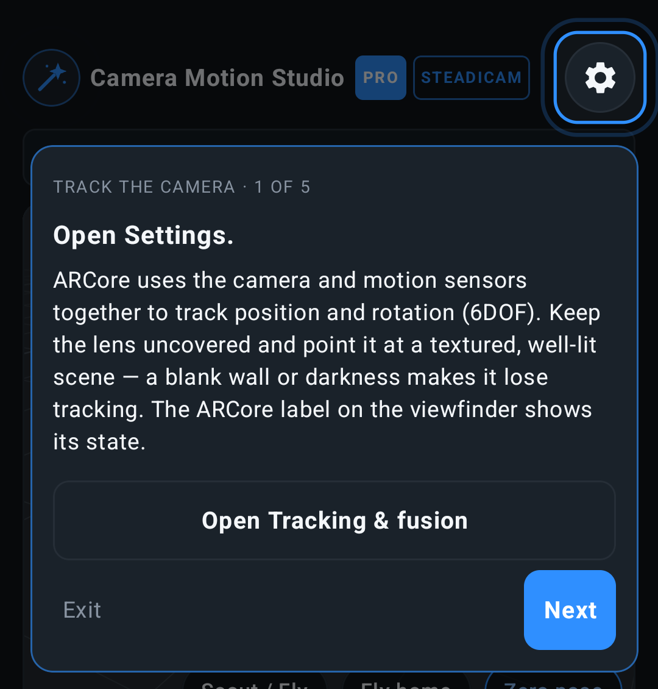
Tracking: ARCore or the IMU
The app has two pose sources. Choose with Settings > Tracking & fusion > Use ARCore.
- ARCore uses the camera for full position and rotation. It also powers the AR viewfinder. If ARCore is unavailable on a phone, the app falls back to the IMU.
- IMU uses the motion sensors: rotation only. Position is entered by hand under Manual position (metres, useful for a locked-off camera whose rotation you still track) or flown with Scout.
With ARCore, three anchor modes pick what the origin is pinned to. All three use the same estimator:
- Unanchored: the origin is wherever the session started, and Zero re-references it. Lowest CPU and no setup, but it can drift over a long take.
- Trackable: pins the origin to a detected floor or table, so drift is corrected.
- Marker: pins the origin to a printed image in the scene. Print it at exactly the width set in the settings, tape it flat where the origin should be, and point the camera at it. Re-home re-snaps the origin to the marker whenever it is in view.
In the anchor modes the position and the rotation have separate references, so the main screen shows two controls: Set anchor / Re-home moves the position origin and Zero pose sets the heading. Level Zero (on by default) makes Zero reset the heading only, so tilt and roll stay level with gravity and zeroing on a tilted phone does not skew everything after it.
If ARCore is starting, reacquiring or has lost tracking, the pose chip turns amber and the 3D camera is drawn amber with Tracking lost. The app holds the last good pose while it waits to reacquire. Restart tracking appears on the viewfinder if it needs a restart.
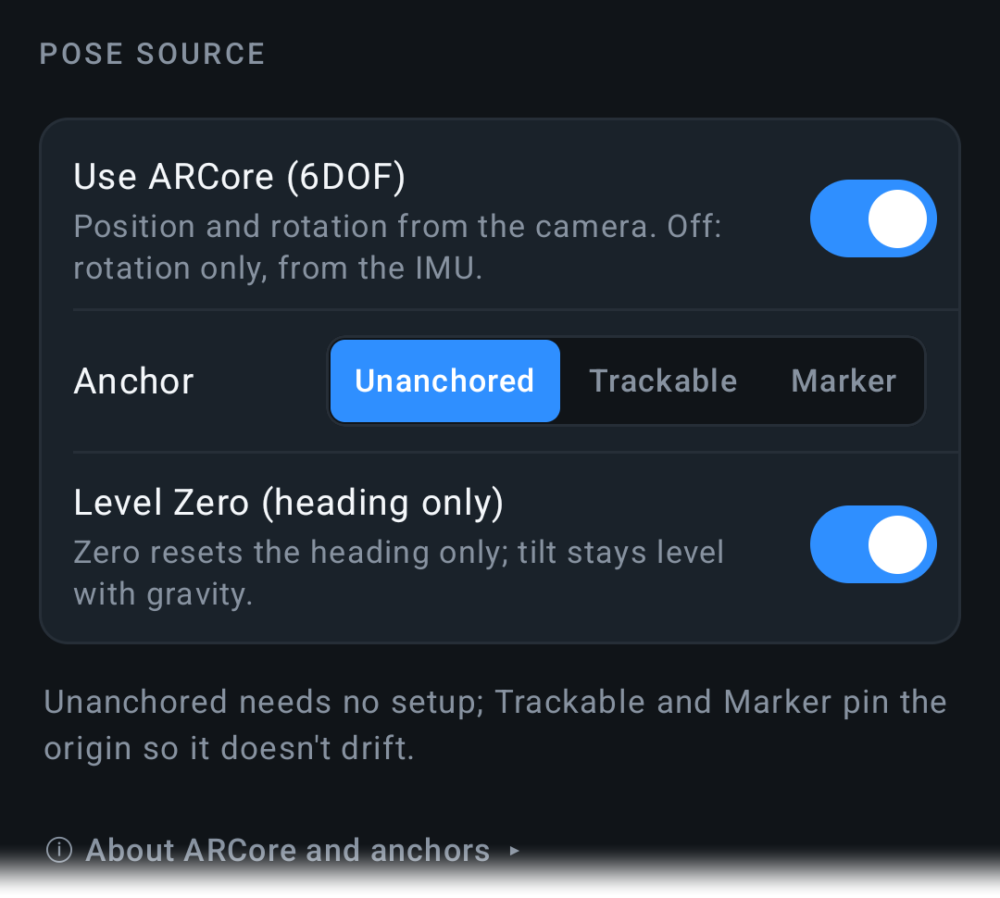
IMU corrections and sensor rates
These apply only while the IMU is the pose source; with ARCore the estimator handles drift itself.
- Gravity correction slowly blends pitch and roll toward the measured gravity vector, which stops them drifting.
- Compass correction blends the heading toward magnetic north. It is unreliable near metal, motors or LED walls, and pauses itself while the compass reports low accuracy.
Sensor rates need no tuning. With Pro, ARCore runs at 60 fps on phones that offer it, at some cost in heat and battery. With the IMU alone, the rotation sensor keeps up with the stream rate.
Zero, Hold and Hold release
Zero pose re-references the tracking where the phone stands and points: the walked position, any drift and the heading. It keeps what Scout added, so with nothing flown the camera is back at the origin, and after a flight it stays at the place you flew it. Fly home clears the flight and the look instead.
Hold position and Hold rotation (Pose tab) freeze that half of the streamed camera for as long as you hold the button. The phone's own readout keeps moving, and nothing is toggled: let go and the camera comes back.
When you let go, the camera does not jump. It blends from where it was held to where the phone now points. Set the time and the curve under Settings > Tracking & fusion > Hold release:
- Blend time (s): 0.5 s by default; 0 cuts straight back.
- Blend style: Linear, Smooth (eases in and out, the default) or Snappy (closes most of the gap early and lands softly).
Only the gap between the held camera and the live one fades; the live motion comes through at full speed from the first moment. Zero, Fly home and Set anchor cut a running blend, because they move the reference on purpose. A take recorded during a Hold follows the same blend, and the 3D view draws the camera blending too.
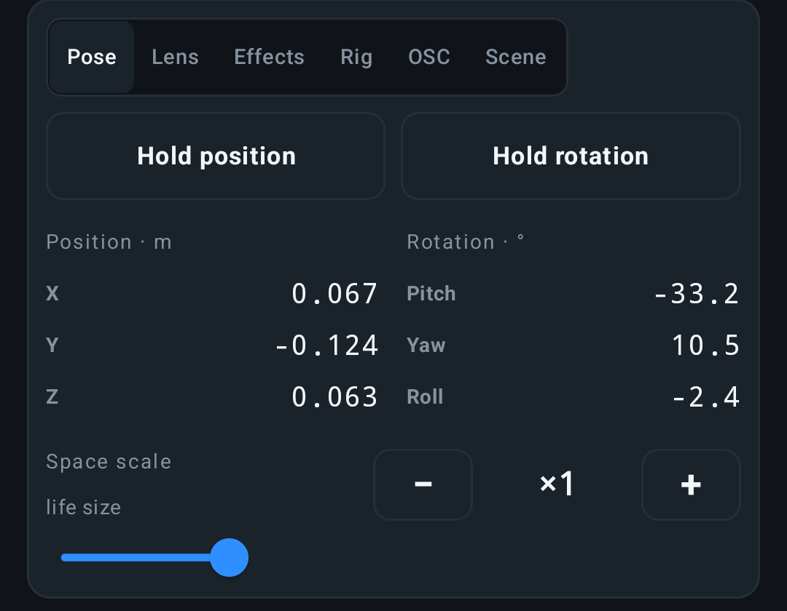
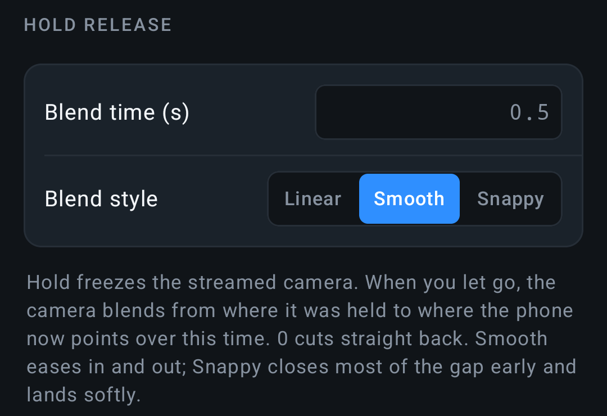
Space scale
The phone works in metres. Space scale is how many times as far the camera travels as you do, in everything the app shows, sends and records: the readout, the 3D view, the markers' distances, takes and every stream. At 1 the shot is life size; at 4 a step of a metre is four.
- Where: the slider and the − / + buttons on the Pose tab, or the field and presets (0.1, 1, 10, 100) under Settings > Axis mapping. Type any other value in the field.
- It is a gain, not a unit. Each receiver converts metres to its own unit. MotionBuilder, Blender, Unreal and Roblox do this for you, FBX files are written in centimetres, and a custom OSC receiver gets metres (the stream says so).
- Saved with a preset: each axis-mapping preset carries its own scale, and loading it applies that scale too.
FreeD carries about ±131 m, so a large scale reaches its limit sooner. At a scale of 100 that is about 1.3 m of phone travel.
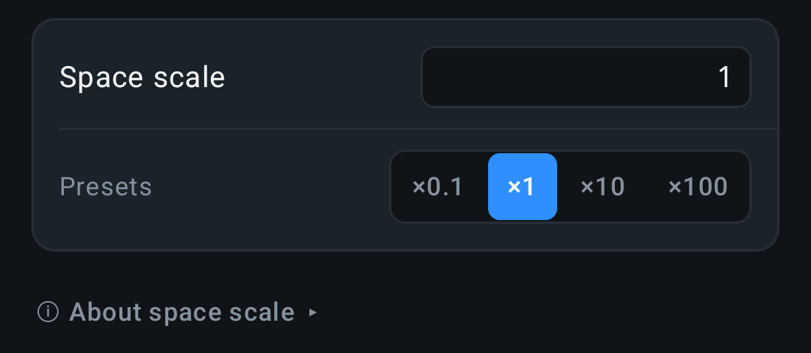
Scout / Fly
Scout flies the streamed position when you are not walking the phone around the set. It works under either pose source: flying offsets the streamed position from wherever tracking currently has it.
Choose the control in Settings > Scout / Fly:
- Shove: hold the Scout / Fly button and shove the phone the way you want to travel. A harder shove flies faster, up to Max speed, and it cruises until you jab the phone back or release. Slide on the button to trim the speed. Lock to horizontal keeps shoves on the ground plane; turn it off to crane up and down too. Turn steers direction re-aims a shove when you turn the phone mid-move.
- Joystick: tap Scout / Fly and the view goes fullscreen with the fly deck. The left stick dollies and trucks along the view, the right-hand pedestal slider cranes up and down, and a speed slider trims how fast it flies. Response shapes how the stick maps to speed. The optional look stick pans and tilts the camera on top of the phone's own rotation and stays where you leave it.
The fly deck is otherwise the normal screen: Lens, Effects and the other panels are under Tools, so you can pull focus while you fly. Tap the lit Scout / Fly button again to hide the sticks, or the corner button to leave fullscreen.

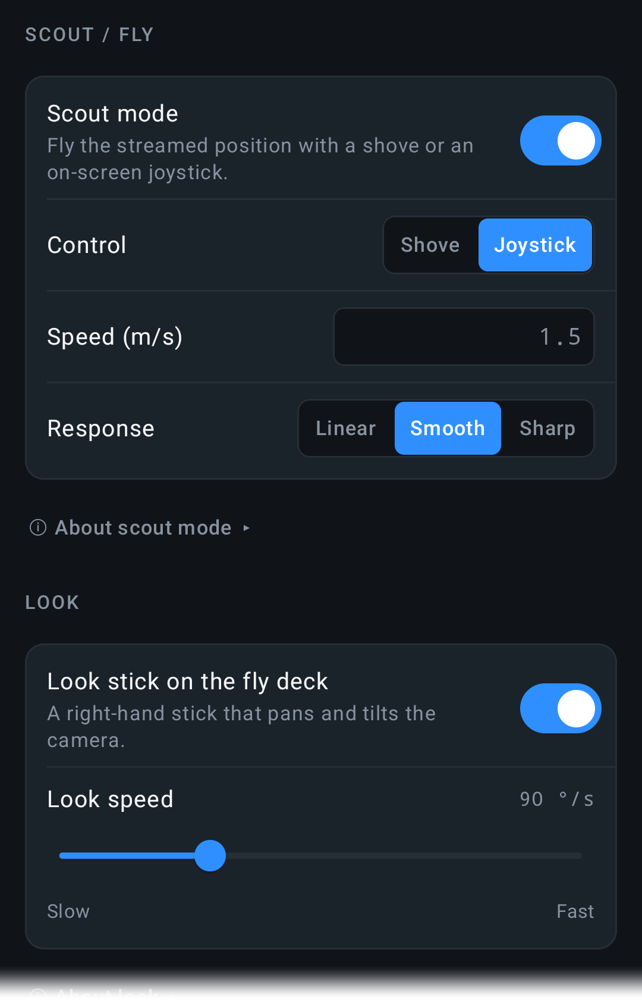
Camera rigs (Pro)
A rig sits between the phone and the stream and gives the camera weight, like real camera support. Pick one from the Rig tab and tune it under Settings > Camera rig, where you also pick the rig from a list with a one-line description of each. On Lite the camera stays raw. While a rig is on, a chip with its name sits beside the plan badge.
- Off: the raw pose, no added lag.
- Smooth: an adaptive low-pass filter: still at rest, quick on fast moves, with a little lag.
- Gimbal: a smooth camera with a level horizon.
- Steadicam: floaty walk-and-follow, so footsteps disappear.
- Operator: handheld, but good: tremor out, a little weight.
- Fly: Scout flies the camera like a drone, with soft starts and stops. Choosing Fly turns Scout on and arms it; choosing another rig leaves it.
The weight slider sets how far the camera trails the phone, and character how it arrives: a dead stop, or settling with a little overshoot. For Fly, weight is how heavy the drone feels, and style runs from Cinematic (soft starts and stops, level horizon) to Sport (quick, leaning into its turns).
A take always keeps the true phone motion. When a rig is on, it also stores the motion that was streamed, so you can export either one.
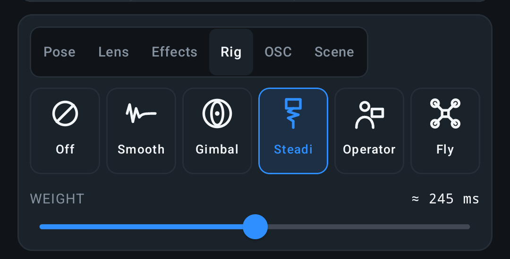
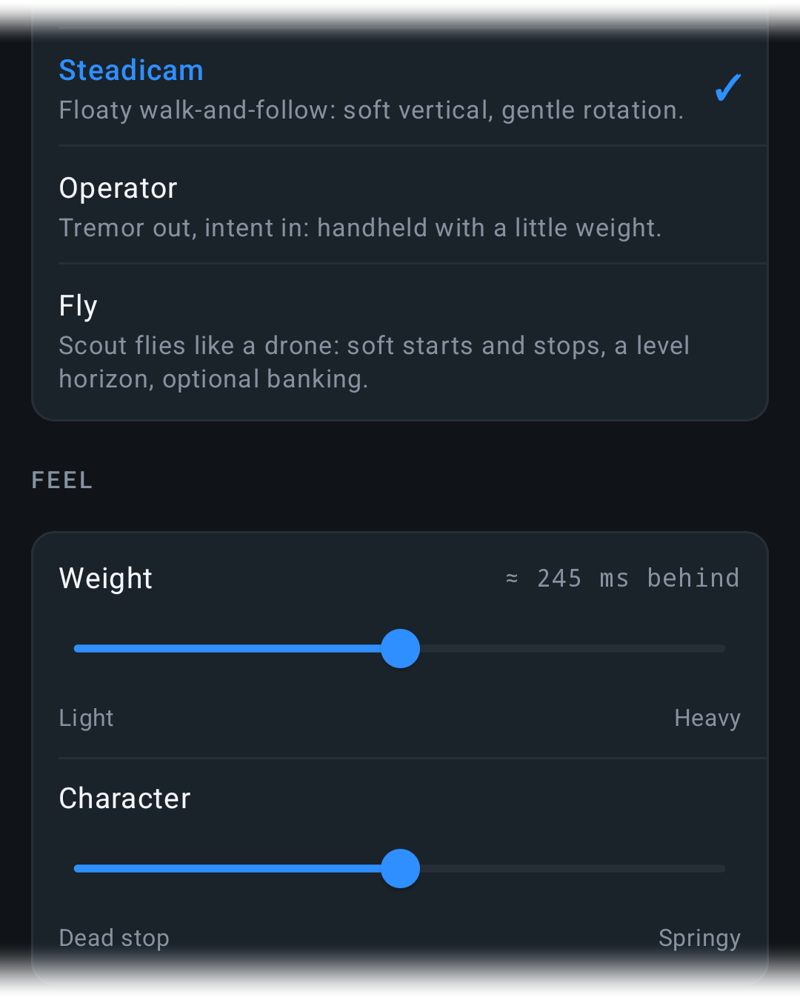
Game controller
Pair a Bluetooth controller (Xbox, PlayStation, 8BitDo and others) or plug one in over USB-C, and the main screen takes it. A small PAD tag appears beside the plan badge. It works on the main screen only; Settings and other screens keep the system's own behaviour. The controller is free; the OSC layer is Pro, like the OSC buttons.
| Control | Action |
|---|---|
| Left stick | Dolly / truck. Pushing it from centre arms Scout by itself |
| Right stick | Look (pan and tilt), on top of the phone's own rotation |
| RT / LT | Pedestal up / down |
| RB / LB | Hold rotation / Hold position, while held |
| D-pad up / down | Next / previous zoom preset |
| D-pad left / right | Focus far / near (a tap is one step, hold to sweep) |
| A / B | Effects: Impact / Punch zoom |
| X / Y | Effects: Shake / Breathing (press to switch on, again to switch off) |
| L3, R3 (hold half a second) | Fly home / Zero |
| Start (hold half a second) | Stream start / stop |
| View held + A, B, X, Y or the D-pad | OSC buttons 1 to 8 (Pro) |
| View held + Start | Record start / stop |
Settings > Game controller lets you turn the controller off, swap the sticks for left-handed use, set the dead zone, look speed and lens sweep speed, turn rumble on, bind every stick, trigger and button, and save whole layouts as presets. Right stick can be set to Pedestal instead of Look. If the controller drops out, everything is released and the sticks read neutral.
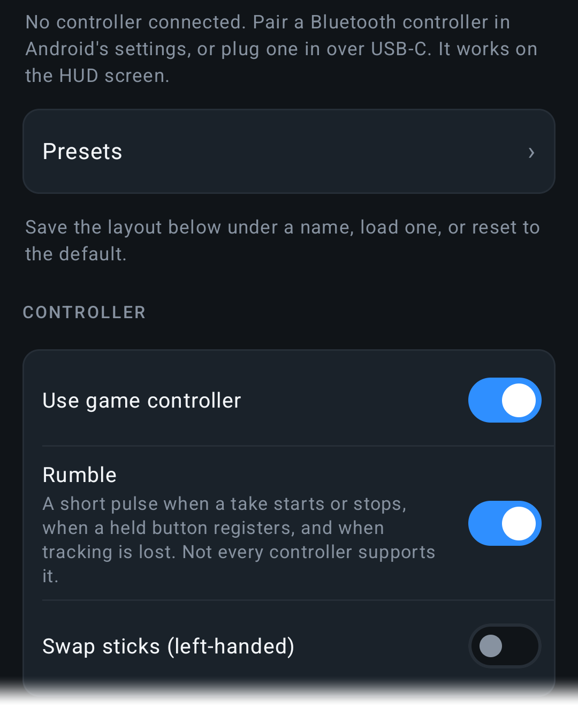
Zoom, focus and iris
The Lens tab controls the camera's lens from the same screen as the camera. By default zoom and iris show a row of preset chips (zoom 24, 35, 50, 85 and 135 mm; iris f/1.4 to f/22) and focus keeps a slider, with a Mark button beside it.
- Presets and sliders. Under Settings > Lens & encoders, each of zoom and iris can show Slider, Presets or Both. Edit the preset list as plain numbers separated by commas. Focus has no presets.
- Blending. Tapping a preset blends to its value over a time set per channel (zoom 1.5 s and iris 0.5 s by default) with a curve of your choice. Zoom and iris move evenly by ratio, so an iris pull is even in stops, not in equal steps of f-number. Moving a slider during a blend takes over.
- Log slider. Spreads equal zoom ratios or equal iris stops evenly along the slider's travel.
Mark, beside the focus slider, holds focus on the Focus marker from the Scene tab, or on a point straight ahead, and keeps it sharp as the camera moves. Tap again to let go. It needs focus calibrated in metres.

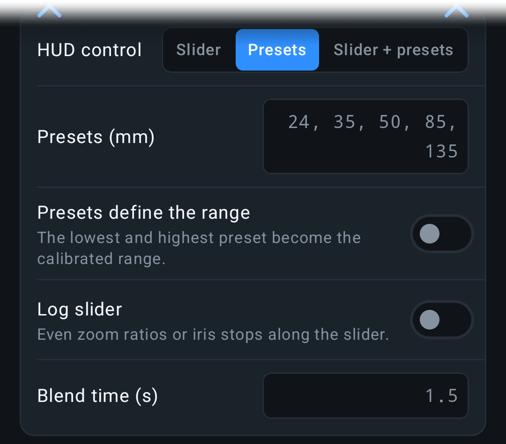
Lens ranges and what is sent
A calibrated channel streams the physical value (the units of Unreal's CineCamera: millimetres, metres, f-number); an uncalibrated channel streams a 0 to 100 % level mapped through its encoder range. Calibrate under Settings > Lens & encoders.
The default presets already define a range, so zoom and iris send real values out of the box. If you calibrate a channel yourself, your own minimum and maximum are used, with the chips placed inside it. Presets define the range makes the lowest and highest preset the calibrated range.
Unreal's Live Link FreeD source cannot be told the calibrated focus range: it reads focus against its own fixed near and far range. Remap to default UE Focus Range rescales the streamed focus so Unreal lands on the distance you calibrated. It only matters for FreeD; OSC and WebSocket carry the distance itself. See the Unreal Engine guide for the full setup.
Effects
The Effects tab adds procedural animation to the camera you stream: Shake and Breathing switch on and off; Impact and Punch zoom play once.
- Effects are live output: the phone's own readout and AR preview stay clean (the 3D view does show them).
- Position amounts are in millimetres in the scene whatever the Space scale. Punch zoom scales the zoom sent on the wire, as a focal-length scale when zoom is calibrated.
- Settings > Effects sets the amount, speed and duration of each. Changes apply the next time an effect starts.
- While recording, every effect press is logged with its time. Include effects when exporting (on by default) replays that timeline into the exported file.
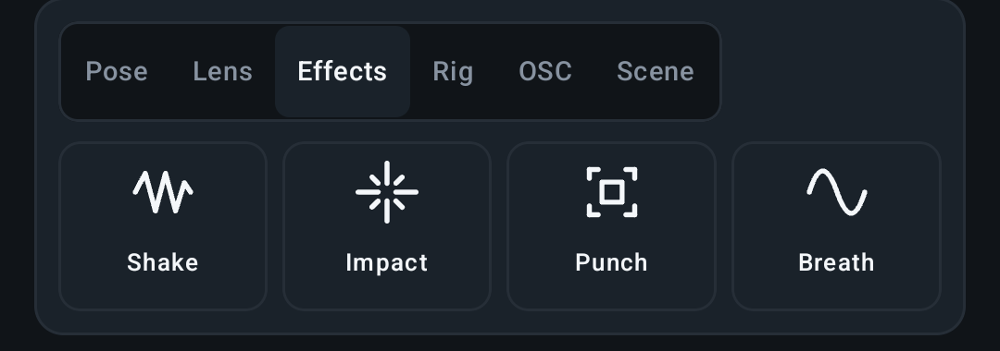
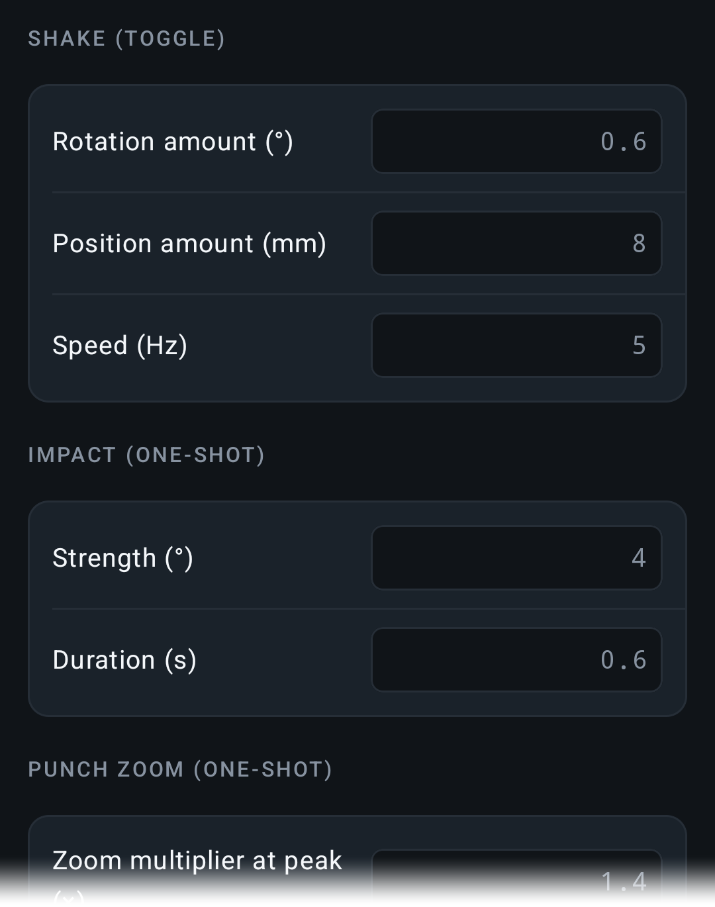
Viewfinders
The view menu at the top right of the viewfinder chooses what you see. Off, 3D view and AR camera are always there; UE (once its signalling URL is set), OBS and NDI are return pictures from your computer, and you can hide any you do not use under Settings > View / Preview Input.
- 3D view: the tracked camera standing in a navigable 3D space with a grid, its recent path, a true-to-life frustum, and the depth-of-field planes when the lens is calibrated. It needs no network and costs nothing while another mode is selected.
- AR camera: the camera image from ARCore with the pose overlaid.
- UE (Pixel Streaming): a live Unreal Engine picture over WebRTC. Set the signalling URL to enable it, and pin the codec to VP9 if the stream crashes on H264 (some devices' hardware H264 decoder is unstable under WebRTC).
- OBS (WHIP): select it, then in OBS set the WHIP output's server URL to the address the phone shows; leave the bearer token blank.
- OBS (NDI): select it to discover NDI sources on your network, then pick one. In OBS, turn on Main Output under NDI Output settings and give it a name. NDI is decoded on the CPU, so it costs more battery and can compete with tracking on a less powerful phone.
Follow the OBS Studio guide for the OBS side and the Unreal Engine guide for Pixel Streaming.
Navigating the 3D view
One finger orbits, a pinch zooms, two fingers pan and a double-tap re-frames. The view menu offers the Persp, Top, Front and Side viewpoints, Camera view (look out through the lens), Follow camera, Frame camera, a Focus planes switch (off by default) and a Trajectory switch (on by default). Settings > 3D view sets the sensor size, frustum length and frame rate. The 3D view shows the phone, not the stream: it is drawn before the axis mapping, and nothing in its settings changes what you stream or record.

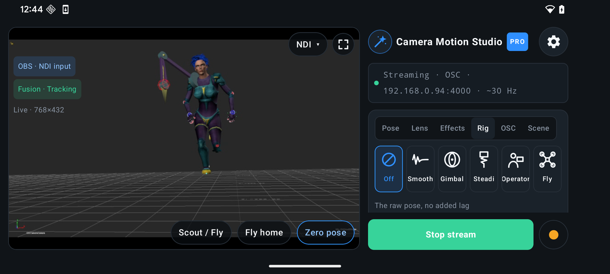
NDI® is a registered trademark of Vizrt NDI AB.
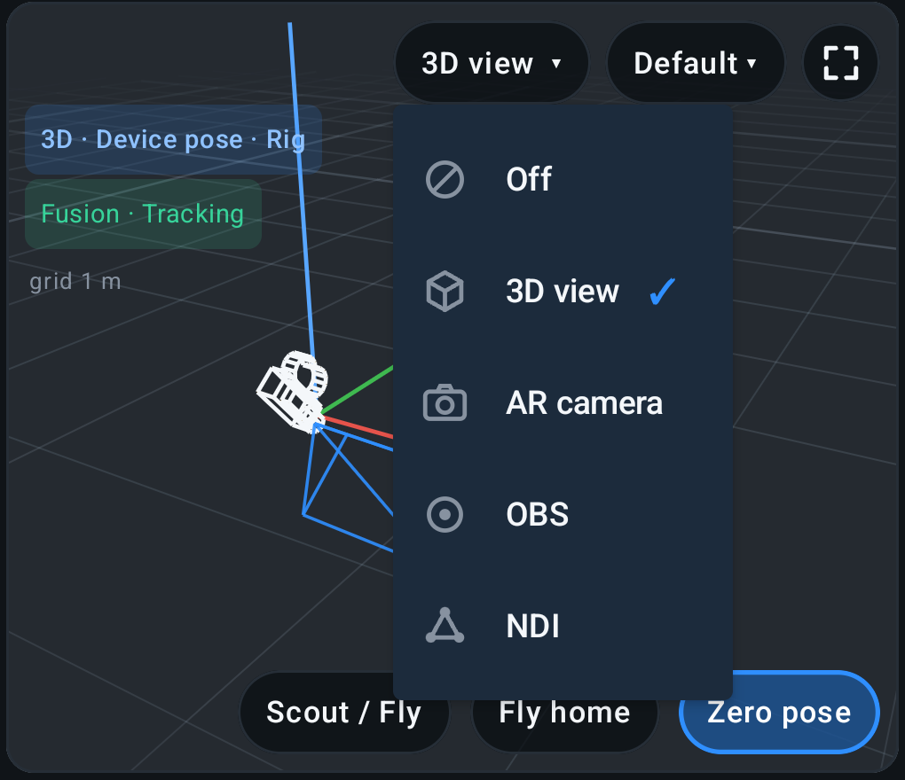
Markers and the live scene
The Scene tab holds markers: points and boxes in space that the camera can aim at and focus on. They are drawn in the 3D view with their distance and roles. Add your own, or let a plugin on your computer send the scene's own models as a Live scene, which is read-only and moves with the sender's timeline.
Markers give you feedback from the real scene without streaming a rendered image back to the phone. Only each marker's position, size, colour and role are sent, far less data than a video frame, so the phone shows them with much less lag than a streamed picture.
- Marker link: turn on Settings > Stream > Scene link > Accept a marker link so the Blender add-on or the Unreal or MotionBuilder plugin can send markers to the phone. It is off by default and opens a UDP port; each new sender is asked about first, and the phone ignores computers you have not allowed. Roblox Studio sends its markers over the stream's own WebSocket instead.
- Back to my scene leaves a live scene and returns to your own markers.
The receiver guides show how to send markers from Unreal Engine, MotionBuilder and Blender.
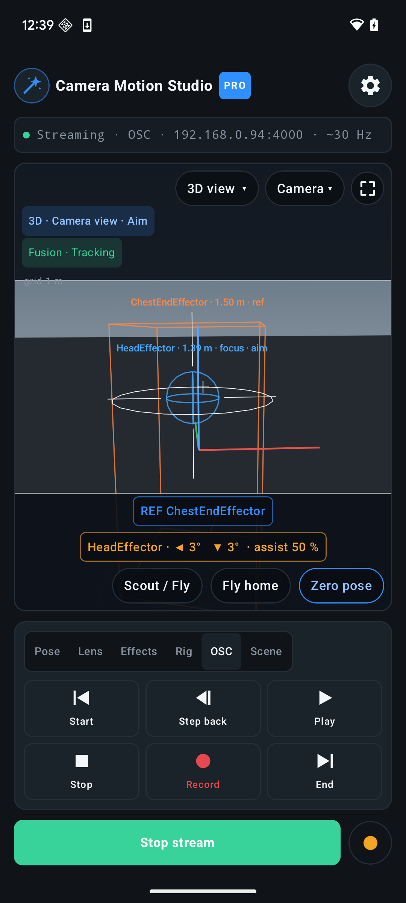
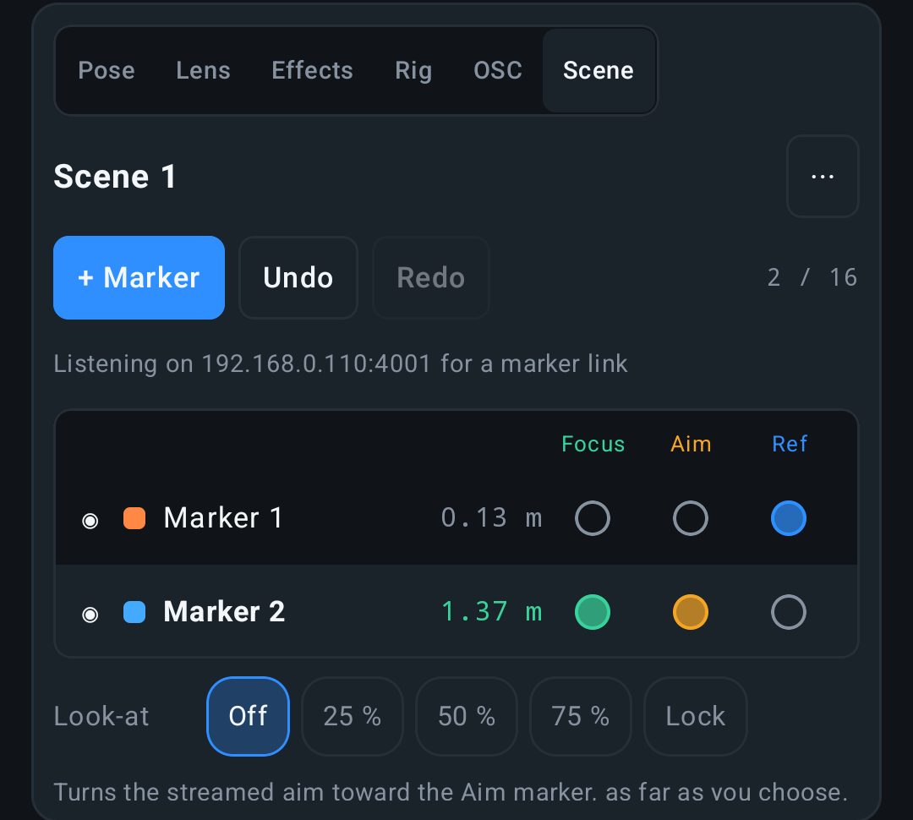
Focus, Aim and Ref
Each marker can take one or more of three roles. A role belongs to one marker at a time, and one marker can hold all three.
- Focus: focus follows the distance to the marker.
- Aim: the look-at turns the streamed camera toward the marker. Choose its strength: Off, 25 %, 50 %, 75 % or Lock. The strength shows as assist 50 % on the view. The phone's own motion is kept in a take.
- Ref: the camera's parent. The camera moves from the Ref marker, following its position or its position and heading, so you can ride with a moving subject or vehicle. Press Zero where the camera stands on it.
A REF chip on the viewfinder names the marker the camera is riding. Takes keep the phone's true motion and also store the streamed camera, so you can export either.
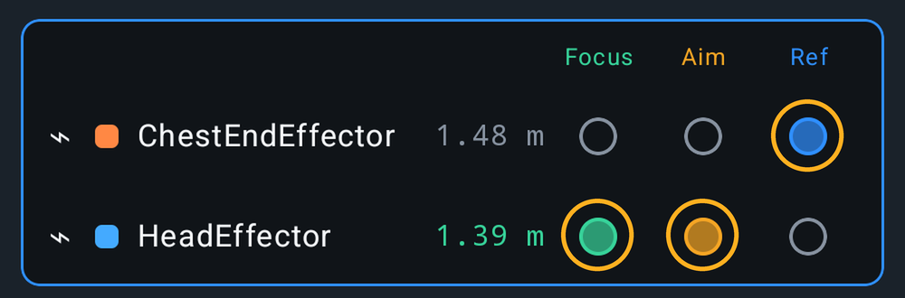
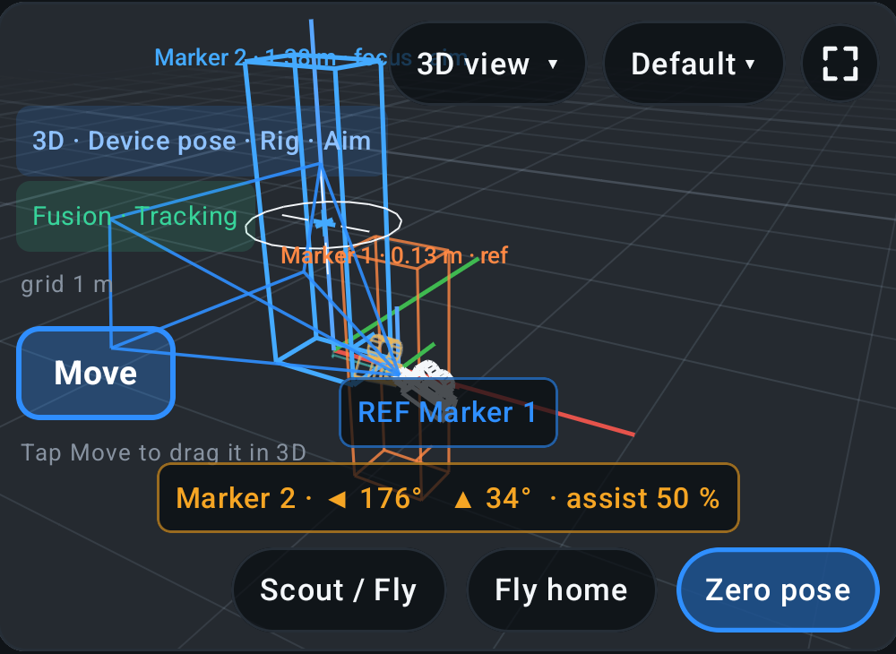
Streaming
Choose the protocol and target under Settings > Stream.
| Protocol | Used for | Notes |
|---|---|---|
| FreeD | Unreal Engine (Live Link FreeD) | Fixed-point position, about ±131 m |
| OSC | MotionBuilder, Blender and custom receivers | Positions in metres; also carries the OSC buttons, the diagnostics stream and the raw IMU stream |
| WebSocket | Roblox Studio | The phone is the server: press Start, then connect to the address the phone shows |
- Send mode: use Unicast with the receiver's IP for a smooth, per-packet feed. Broadcast and multicast work, but Wi-Fi access points hold those packets and release them in bursts about every 100 ms, so a 30 Hz stream lands as a few packets at a time.
- Also send to (Pro): fan the same pose packets out to extra machines, one
ip:portper line. - Rate: Lite streams at 30 Hz; Pro up to 60 Hz.
Lite streams to one machine, for sessions of up to five minutes. See Lite and Pro.
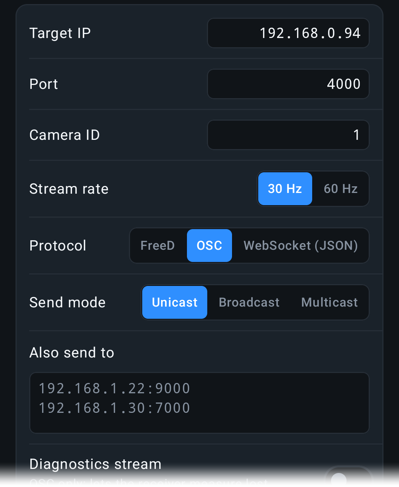
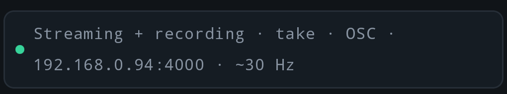
Recording and takes
The round Record button starts and stops a take. Recording is unlimited in length and count on both Lite and Pro, and works with or without streaming.
- A take keeps the true phone motion, whatever rig, look-at or Hold was on. When a camera rig is on, or an Aim or Ref marker exists, it also stores the motion that was streamed.
- It also keeps the lens as calibrated and a log of every effect you pressed.
- The Recordings screen lists your takes: rename, star, export, delete, or play back.
- Playback (Pro): Stream this take makes a take the pose source and streams it on a loop at its recorded spacing. A take that carries the streamed motion can be played as streamed or with the phone's own motion.
- Start / stop sounds (optional) beep when recording or streaming starts and stops, so you can line up another camera's audio with the take.
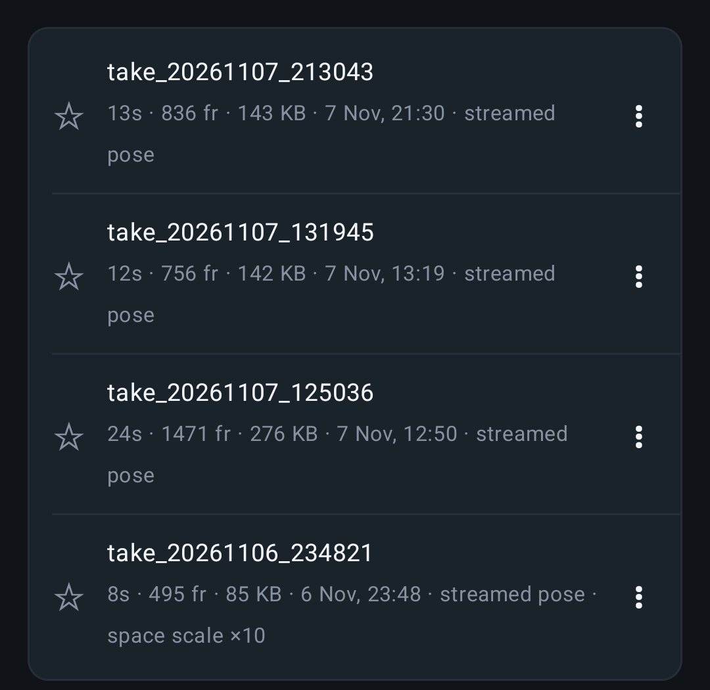
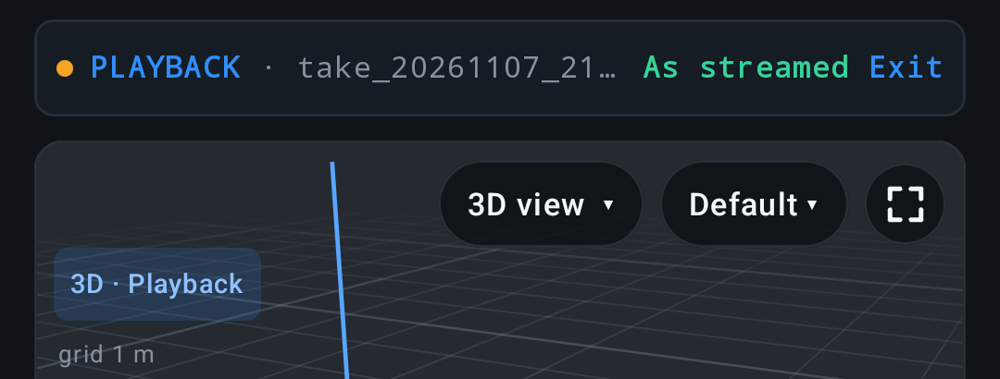
Export
Export a take from the Recordings screen. The formats:
- CSV (free): pan, tilt, roll, position, lens. Include raw IMU (Pro) adds the untouched sensor columns.
- FBX (Pro): the camera motion in centimetres with scene metadata, so it imports into MotionBuilder without a stray scale. Calibrated focal length, focus distance and aperture animate onto the camera automatically.
- Roblox Json (Pro): a baked camera path for Roblox Studio. Resample frame rate drops frames to make the file smaller.
Four settings under Settings > Recording decide what an export contains:
- Export as streamed (on by default): export the rig's or the look-at's motion instead of the raw phone motion. Takes recorded with neither export raw either way, and the CSV of such a take always carries the streamed motion as extra
rig_columns. - Include effects when exporting (on by default): replays the take's effect log into the file. Off, the export is exactly what was recorded.
- Smooth export (Pro): runs a low-pass filter once over the whole take, separately for translation and rotation, before any effects. A blank cutoff leaves that channel unsmoothed; lower smooths harder.
- FBX position scale (default 1): leave it at 1, because the FBX already matches the stream. Changing it multiplies the exported position and focus distance again.
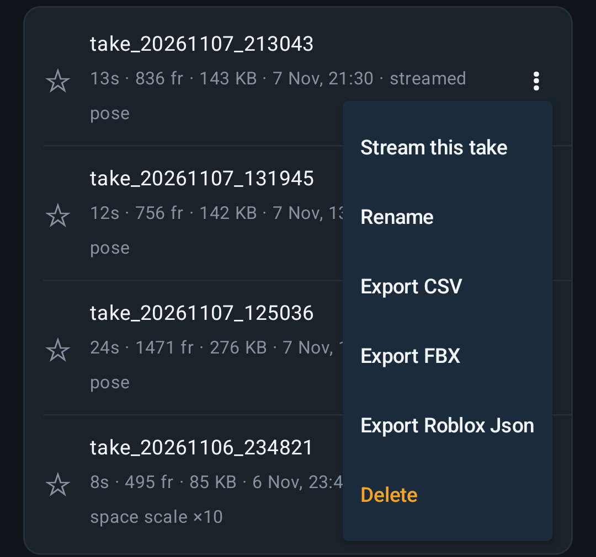
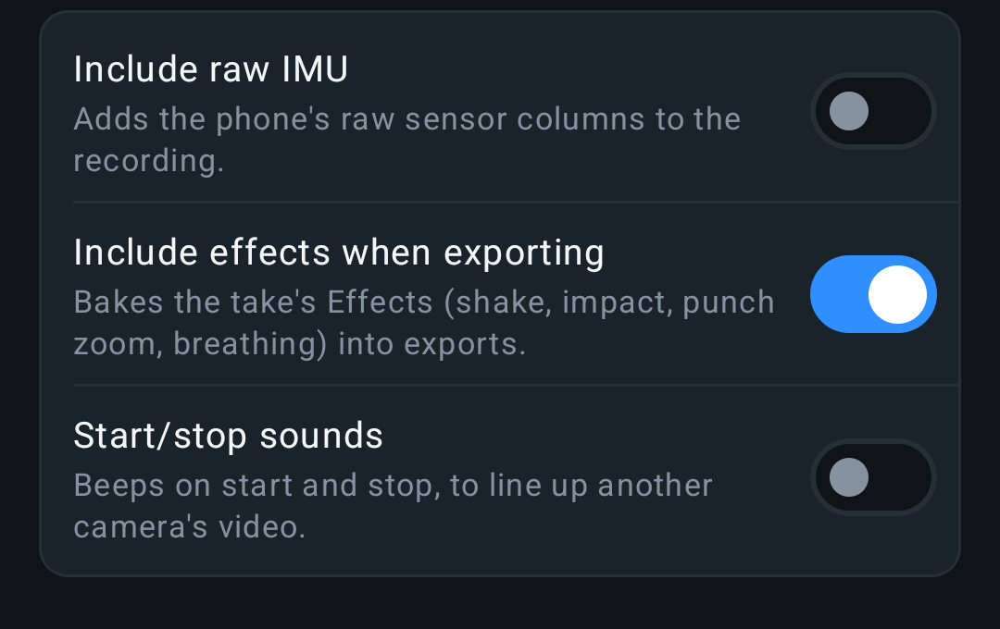
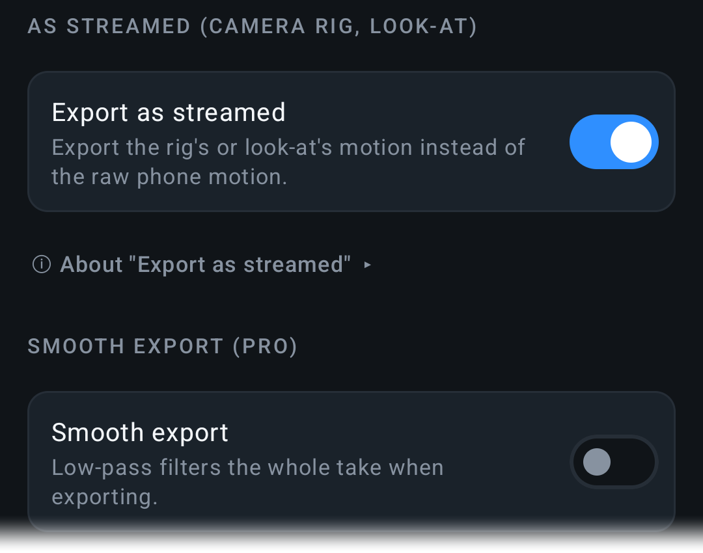
Axis mapping
Settings > Axis mapping decides how the phone's motion is labelled on the wire. The Default preset matches Unreal's convention and the frame the other receivers expect, so leave it alone unless a receiver needs something else. You can pick which source drives each of yaw, pitch and roll and X, Y and Z, invert any of them, and save the whole set as a named preset. Reset to Default puts everything back.
Look-at, the Roblox transform and the 3D view's match with the receiver all assume the Default mapping. Space scale lives on this screen too.
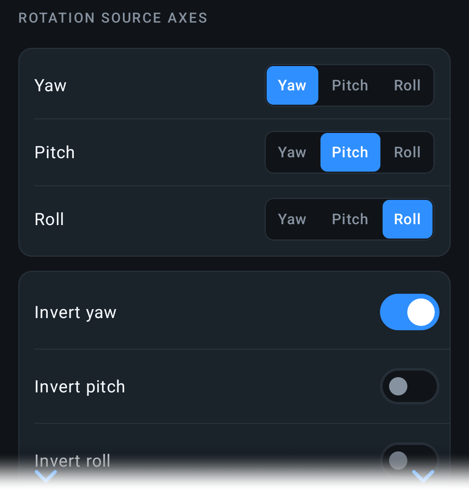
Advanced streams and session options
- Diagnostics stream (OSC): every frame also sends a sequence number and the send time, so a receiver can count dropped packets and measure latency.
- Raw IMU stream (OSC, Pro): also sends the untouched sensor values with every frame, in the phone's own body frame, for a receiver that fuses them itself.
- Keep tracking in background: runs a foreground service with a notification so streaming survives leaving the app. ARCore needs the camera, so it still pauses when the app leaves the screen.
- Lock orientation while tracking (on by default): the screen does not rotate while streaming or recording.
- Keep the screen on: with the option off, the screen stays on while streaming, recording or calibrating.
Lite and Pro
Lite is free. Pro is a monthly subscription or a one-time lifetime purchase through Google Play. Everything not listed as Pro below is in Lite.
| Feature | Lite | Pro |
|---|---|---|
| Live streaming | One machine, up to 30 Hz, sessions of up to 5 minutes | No time limit, up to 60 Hz, Also send to extra machines |
| Camera rigs and motion smoothing | Raw pose | Smooth, Gimbal, Steadicam, Operator, Fly |
| OSC buttons | No | Yes |
| Recording | Unlimited, CSV export | Unlimited, plus FBX, Roblox Json, Smooth export, raw IMU columns |
| Take playback | No | Stream a saved take |
| Raw IMU stream | No | OSC /livetracker/imu |
| ARCore at 60 fps | No | On phones that offer it |
Tracking, Scout / Fly, the game controller, lens control and presets, effects, markers, the 3D view, the viewfinders, Hold release and Learn are all in Lite. Camera Motion Studio's receiver plugins are separate from the app plan.
Language and help
The app follows the phone's language by default. To change it, use the language menu on the setup wizard's first page, in the header of the Learn pages, or Settings > Help & feedback. Choose Automatic (phone language) to follow the phone again.
Where next
Connect the app to the software you work in: Unreal Engine, MotionBuilder, Blender, Roblox Studio or OBS Studio. Each has a connection checklist for when something does not arrive.